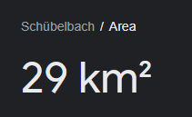
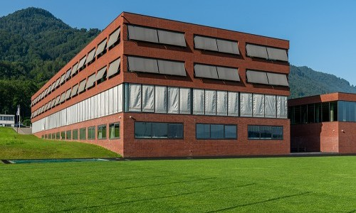
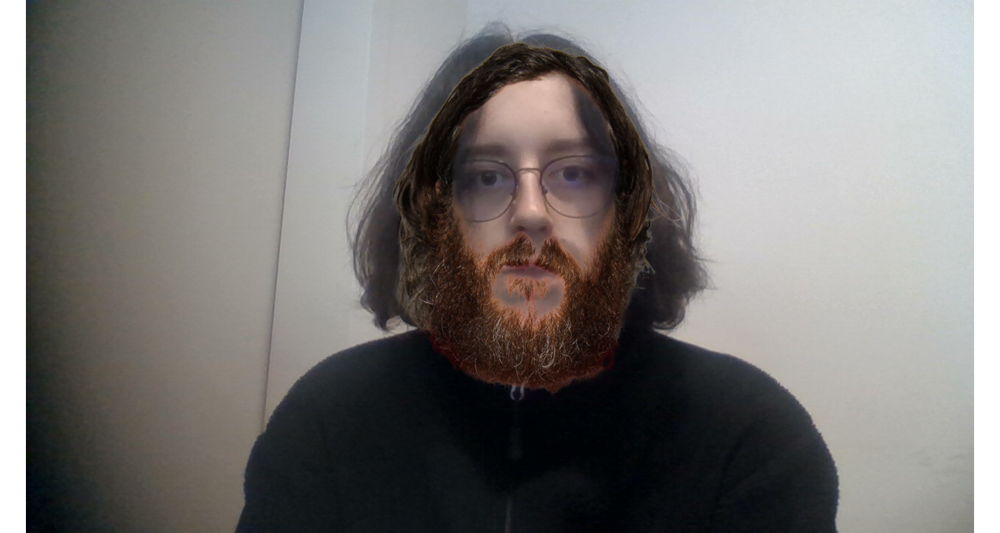

Ich, Nikola Bogosavljevic, bin am 27. September 2004 geboren, und habe damit die Welt beglückt.
Ich habe meine jungen Jahre in Saanen verbracht, danach sind wir in die Grossstadt Schübelbach eingezogen.

Doch irgendwann ist mir die wunderschöne Stadt zu klein geworden und damit habe ich beschlossen in die Welt aufzusteigen.
Ich bin dann nach Reichenburg gezogen. Wow. Die Stadt die die wichtigsten Menschen der Menschlichen Geschichte als Heimat bezeichnen.
Dort habe ich meine schulische Karriere in MPS Buttikon fortgesetzt. Das schöne Schulhaus, welches wie ein Brick aussieht.

Zuerst habe ich die Real besucht, doch da ich Nikola Bogosavljevic bin, konnte ich ohne Probleme in die Sek aufsteigen.
Doch leider konnte ich nach dem dritten Jahr keine Lehrstelle finden. Common Bog L.
Meine einzige Lösung war es das Brückenangebot zu machen. Dort konnte ich gute Bewerbung schreiben. Uncommon BBZ W.
Accenture konnte nicht nein zu mir sagen, deswegen bin ich jetzt hier. Bog W.
